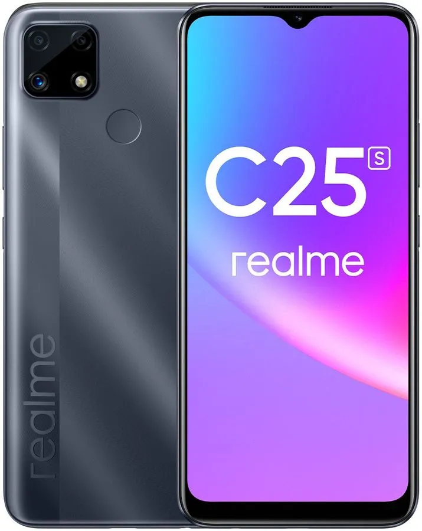

Смартфон REALME C25s 4/64Gb, cерый

Описание продукта:
Смартфон REALME C25s создан для уверенных пользователей. Производительный процессор справится с загрузкой любых приложений, необходимых для работы, связи или развлечений.Характеристики
Дисплей диагональю 6.5 дюйма и поддержкой свыше 16 млн цветов передает насыщенное и реалистичное изображение. 8-ядерный процессор Mediatek Helio G85 2000 МГц и графический ускоритель ARM G52 MC2 обеспечивают бесперебойную работу. Для тяжелых приложений предусмотрено 64 Гб внутреннего пространства. Быструю загрузку поддерживает оперативная память 4 Гб. Интеллектуальная тройная камера 48/2/2 Мп позволяет уловить каждый момент. Фронтальный объектив 8 Мп создает четкие селфи. Защита данных обеспечивается через сканер отпечатка пальцев и распознавание по лицу. Многочасовую функциональность устройства поддерживает аккумулятор 6000 мАч. Большое пространство для работы и развлечений
Яркий экран с "монобровью" увеличивает возможности для быстрого допуска к важным приложениям. Смотрите видео, читайте новости или создавайте проекты с увеличенной полезной площадью и режимом Multitouch.
Загрузка тяжелых программ
С мощным процессором Mediatek Helio G85 установка и использование ресурсоемких игр и приложений производится моментально. За счет большого объема внутреннего пространства вы сможете сохранить любые данные, а оперативная память 4 Гб обеспечит слаженную работу системы.
Создание качественных снимков
Объективы смартфона улавливают мельчайшие детали. Снимайте пейзажи, ночные портреты или следите за природой через макрообъектив. Интеллектуальные камеры помогут создать качественные и красивые снимки.
Высокая энергоэффективность
С емким аккумулятором 6000 мАч вы будете оставаться на связи и пользоваться устройством длительное время. Приложение Quick Freeze “заморозит” расход энергии снижением фоновой активности приложений.